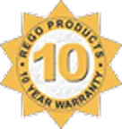

LPG, Cryogenic & LNG продукти для глобального ринку
REGO з гордістю пропонує найсучасніше обладнання для LPG/NH³/кріогенної
та LNG промисловості. З огляду на те, що світ все більше зосереджується
на альтернативних видах палива, REGO з гордістю пропонує найсучасніше
обладнання для транспортних засобів, що працюють на зрідженому
природному газі. Ми є постачальником арматури номер один для ринку СПГ,
що значно зростає. REGO надає своїм клієнтам продукцію найвищої якості
через нашу міжнародну дистриб’юторську мережу та регіональні офіси в
Латинській Америці, Європі та Азії. Маючи чотири найсучасніші виробничі
потужності в Північній Кароліні, ми постійно розширюємо асортимент
продукції, щоб задовольнити потреби нових ринків LPG/NH³/Кріогенний і
LNG.
Зроблено в США
Продукція REGO ® виробляється на чотирьох підприємствах у штаті
Північна Кароліна, США. Лише матеріали найвищої якості
використовуються в усіх продуктах REGO ® . В процесі обробки
використовуються робототехніка, обробка з ЧПУ та інтегроване
комп’ютерне виробництво для досягнення строгих стандартів.
Перевірено на найвищу якість

Усі продукти проходять 100% тестування для надійної роботи. Об’єкти
можуть похвалитися власною випробувальною лабораторією з робочим
резервуарним парком і лініями високого тиску, що дозволяє інженерам
завершувати проекти та перевіряти продуктивність на місці.
Складальні потужності та випробувальні лабораторії сертифіковані UL®
відповідно до ISO9001 .
Глобальна дистриб'юторська мережа
Клапани та регулятори REGO ® продаються через мережу авторизованих
дистриб’юторів по всьому світу. Крім того, RegO® управляє
дистриб’юторськими центрами в Німеччині, Китаї та Мексиці, які
постачають продукцію та підтримують наші глобальні ринки.